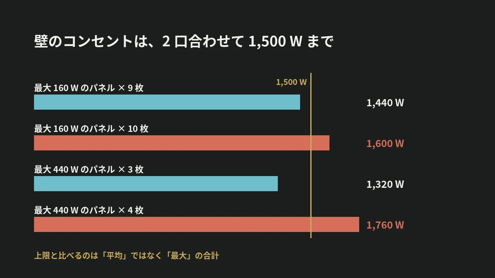

LOTUS VISUAL JOURNAL / 現場の裏側 #26
壁のコンセントは、
2 口合わせて 1,500 W。
延長コードの「上限」を読む
結論から。壁の 2 口コンセントは、2 口の合計で 1,500 W までです。口が 2 つあっても、倍は使えません。
テーブルタップにも、コードリールにも、本体に書かれた上限があります。機材をつなぐ前に、ワット数を足し算します。
01 / THE TOTAL口の数ではなく、合計
製品評価技術基盤機構(NITE)は、2024 年 12 月の製品安全情報で、コンセントにも上限があることを説明しています。一般住宅の壁にある 2 口のコンセントは、2 口の合計で 1,500 W まで。片方に 1,000 W の製品をつないだら、もう片方は 500 W までです。
口が 2 つあるからといって、2 倍使えるわけではありません。会議室やホールで機材をつなぐときも、口の数では判断しません。そのコンセントで合計いくつまで使えるかを、会場の担当の方に確かめます。
02 / TAPS AND CORDSタップとコードにも、上限がある
テーブルタップや延長コードにも、つなげる上限(最大消費電力、または定格電流)が決まっていて、本体やパッケージに書かれています。NITE によると、上限を超えて使うと発熱し、差し込み口の金具とプラグの接触がゆるい所で異常に熱くなったり、コードの被覆が傷んでショートしたりして、発火につながります。
NITE が 2020 年 12 月に公表した資料では、2015 年度から 2019 年度の 5 年間に、配線器具の事故が 282 件。そのうちテーブルタップが 164 件、延長コードが 66 件でした。
03 / CORD REELSコードリールの数字は、2 つあることがある
イベントの現場でよく使うのが、長いコードを巻き取るコードリールです。NITE の同じ資料は、コードリールについて 2 つの点を挙げています。コードをすべて引き出した状態と、収納した状態とで、つなげる上限が違う製品があること。すべて引き出して使う前提の製品があること。
事故の例も載っています。コードリールに、上限を超えるふとん乾燥機を複数台つないで使い、コードが異常に発熱して、建物が半焼した事故です。
使う前に、本体の表示と説明書で、巻いたままのときの上限と、すべて引き出したときの上限を確かめます。どちらの状態で使うかを決め、つなぐ機材の合計をその数字と比べます。
04 / ADD IT UPLED パネルで足し算してみる
当サイトの機材ガイドに載せている LED パネルで、足し算をしてみます。1 枚あたり最大 160 W(平均 80 W)のパネルなら、9 枚で 1,440 W。10 枚で 1,600 W になり、1,500 W を超えます。1 枚あたり最大 440 W(平均 220 W)のパネルなら、3 枚で 1,320 W、4 枚で 1,760 W です。
機材ガイドには、最大と平均の 2 つの数字を載せています。上限と比べるのは、最大のほうです。
LED の画面は、数十枚のパネルで組みます。72 枚の画面なら、1 枚あたり最大 160 W として、合計は 11,520 W。壁のコンセントで足りる量ではありません。会場の電源の設備から、専用に電気を取る計画が要ります。
05 / ON SITELOTUS VISUAL へのご相談では
LOTUS VISUAL へのご相談では
機材を決める段階で、機材ごとの最大消費電力を一覧にし、電気を取る系統ごとに合計します。そのうえで、会場のどこから、どれだけの電気を取れるかを、会場の担当の方に事前に確認させてください。
当日は、コードリールの表示を読んでから使い、プラグの差し込みとほこり、コードを踏ませない通し方を確かめます。合計の数字を出さないまま、つなぎ始めることはしません。
06 / TAKEAWAY今日の持ち帰り
今日の持ち帰り
- 壁の 2 口コンセントは、合わせて 1,500 W。口の数ではなく、合計で考える。
- タップにもコードリールにも、上限が書いてある。コードリールは、巻いたままと引き出したときで数字が違う製品がある。
- 足し算は「最大」で。最大 160 W のパネルは 10 枚で 1,500 W を超える。大きな画面は、会場の電源から専用に取る。
出典:製品評価技術基盤機構(NITE)製品安全情報メールマガジン Vol.466「配線器具の事故」(2024 年 12 月 10 日。壁の 2 口コンセントの合計 1,500 W、テーブルタップの上限と発熱)、NITE 公表資料「テレワークで大混雑 ～プラグ・コードの取り扱いに注意～」(2020 年 12 月 24 日。コードリールの記述と事故の例、2015〜2019 年度の事故件数)。LED パネルの消費電力は、当サイトの機材ガイドに載せている値です。